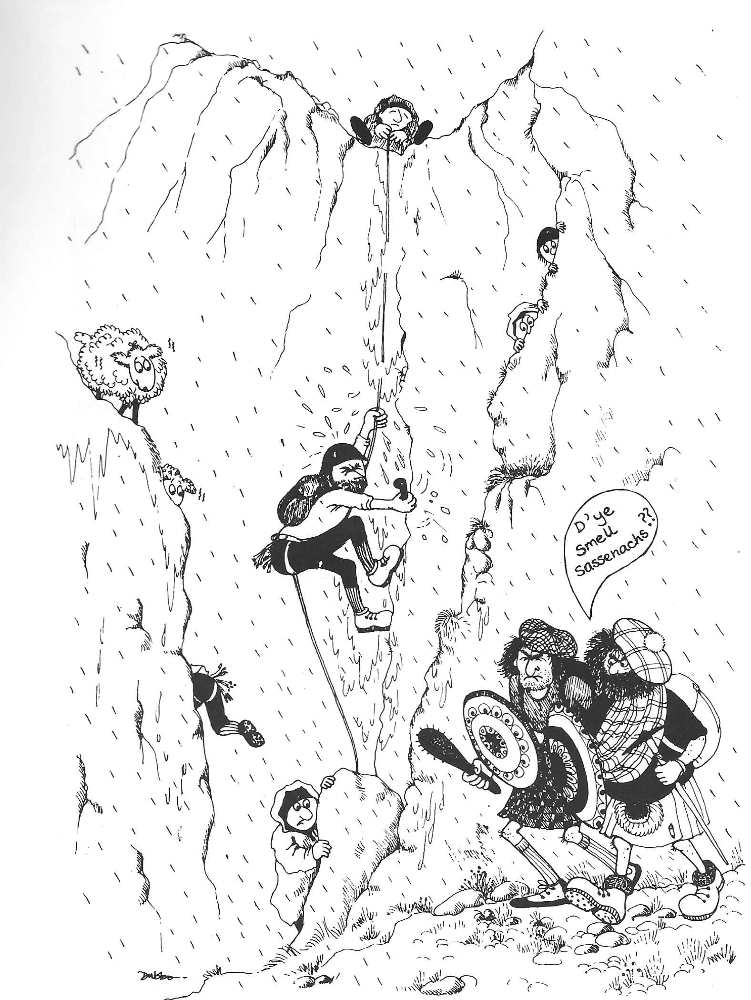

The Siege of Clachaig Gully
On one of the earliest Glencoe meets the sun actually shone on both the Saturday and the Sunday! Faced with the long drive home that night, a group of us looked for a climb which didn't involve a long approach and decided on Clachaig Gully . We packed up and were about to start out from Lagangarbh when someone asked what we had in mind.
"Clachaig Gully? That sounds like a good idea. Mind if I come along?"
By the time we had set off from the pub car park the numbers had swollen to about twelve and it had the makings of a good epic. I can't remember all the names but Mike Anderson, Ashley Turner and Dick Arnold were definitely among the team.
The early pitches went well and we made rapid progress despite the numbers. Then we came to the cave pitch Mike led this and I followed. No one else felt like leading it so, sitting on the little saddle at the top of the pitch, I began top roping people and lowering them down the other side of the ledge where they could unrope and walk into the bed of the gully. It was pleasant enough sitting up there in the sunshine and when the last man was up I swung down to the ledge, coiled the rope and walked up the gully fully expecting to find a top rope on the next pitch. What greeted me was a very glum circle of people.
"Your pitch" said Mike, before I could object. This was the famous Jericho Wall, dripping in water and slightly overhanging. My first attempts all ended in failure, which was in itself only slightly frustrating compared to the added annoyance caused by the water streaming down my shirt sleeves. The problem was getting a foot onto a small incut hold about eight feet up the slime covered wall offered no positive foothold and what hand holds there may have been were similarly slippery.
Reversing the route was totally out of the question so, rummaging in my sack, I dragged out my secret weapon. A peg! This, placed at head height, gave me enough assistance to gain the foothold the holds above were then within reach and the rest of the wall was easier. I threw the rope into the gully and the rest of the team began their ascent. About half the team were up when I heard the clatter of equipment as another group reached the top of the cave pitch. Then the distinctive twang of a Glasgow accent drifted up. If they found us using a peg on their route there would be a lynching!
"Get that peg out quick, the Scots are coming," I shouted down. Two taps of the hammer and the evidence of our transgression was removed.
The Scots were left to climb the pitch by their own devices, giving us enough time to implement our escape in the best Castle traditions of tact, diplomacy… and self preservation.
[[]